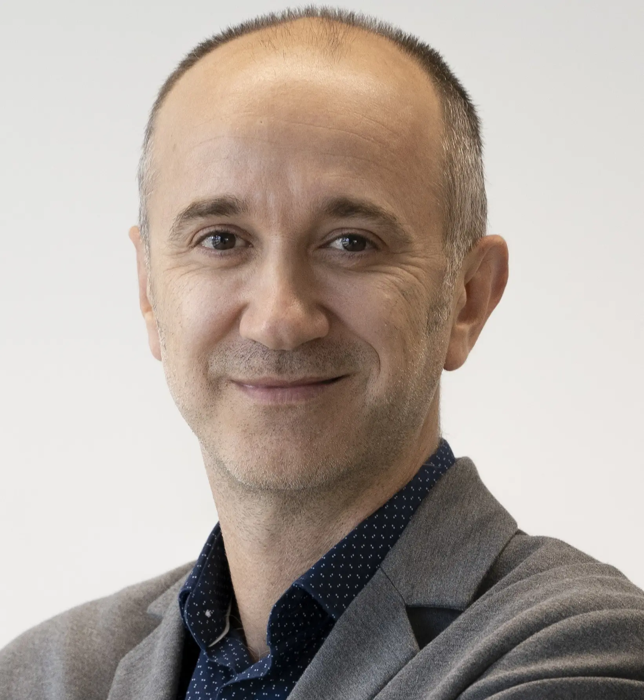

Keynote Speakers
Michelle Banawan
Dr. Michelle Pacifico-Banawan currently leads the Bachelor of Science in Data Science and Business Administration at the Asian Institute of Management as Academic Program Director, the Philippines’ first Transnational Higher Education Program with the University of Houston. With a Ph.D. in Computer Science from Ateneo de Manila University, her academic career and work has been centered on bridging technology with education, as evidenced by her postdoctoral research at Arizona State University's Science of Learning and Educational Technology Laboratory and her leadership in academia. Her current work extends to pivotal advocacy and research on the impact of Generative AI (GAI) in education and various domains.
Dr. Banawan's dedication to integrating GAI into educational paradigms has seen her actively engage as a resource speaker globally, sharing insights and practical applications of GAI across education, industries, and beyond. She is currently involved in various initiatives in shaping future educational strategies through GAI in Asia and the Pacific. This advocacy allows her to contribute to developing trust in AI systems, governance, creating meaningful engagements, and prioritizing pedagogy to harness AI's potential effectively.
Dragan Gašević

Dragan Gašević is Distinguished Professor of Learning Analytics and Director of Research in the Department of Human Centred Computing of the Faculty of Information Technology and the Director of the Centre for Learning Analytics at Monash University. Dragan’s research interests center around data analytic, AI, and design methods that can advance understanding of self-regulated and collaborative learning. He is a founder and served as the President (2015-2017) of the Society for Learning Analytics Research. He is a recipient of the Life-time Member Award (2022) as the highest distinction of the Society for Learning Analytics Research (SoLAR) and a Distinguished Member (2022) of the Association for Computing Machinery (ACM). In 2019-2023, he was recognized as the national field leader in educational technology in The Australian’s Research Magazine that is published annually. He led the EU-funded SHEILA project that received the Best Research Project of the Year Award (2019) from the Association for Learning Technology.
Mirjam Hauck
Dr. Mirjam Hauck is the Director of The Open Centre for Languages and Cultures and Associate Head for Internationalisation, Equality, Diversity and Inclusion in the School of Languages and Applied Linguistics at the Open University/UK. She is also a Senior Fellow of the UK’s Higher Education Academy and has written numerous articles and book chapters on the use of technologies for the learning and teaching of languages and cultures, in virtual exchange (VE) contexts in particular, i.e. online collaborative learning between groups of students in different cultural contexts and/or geographical locations.
Currently her scholarly work focuses on theorizing and framing the nascent field of critical virtual exchange (CVE), i.e. VE through the social justice and inclusion lens which aims to ensure more equitable and inclusive student exchange experiences.
Dr. Hauck presents regularly at conferences, seminars, and workshops worldwide. She is the President of the European Association for Computer Assisted Language Learning (EUROCALL), and the Chair of the Language and Culture Expert Community of the European Association for International Education (EAIE). She serves as Associate Editor of the CALL Journal and is a member of the editorial board of ReCALL and LLT.
Seiji Isotani
Seiji Isotani is a Visiting Professor of Education at the Harvard Graduate School of Education and a Professor of Computer Science and Learning Technology at the University of São Paulo, Brazil. He earned his Ph.D. from Osaka University, Japan, and was a postdoctoral researcher at Carnegie Mellon University. For over 15 years, Isotani has dedicated his research career to advancing the science of how people learn with interactive and intelligent educational technologies, and to exploring the design and implementation of public policies that ensure every student receives the personalized support needed for fulfilling and meaningful educational experiences. He is renowned for his work in the fields of Gamification in Education and Artificial Intelligence in Education for resource-constrained environments. Since 2017, he has served as a technical and scientific advisor to the Brazilian Ministry of Education, designing and implementing public policies related to educational technologies. He was a key contributor to the development of norms for the K-12 Computer Science Curriculum in Brazil and to the design and implementation of educational policies that have significantly influenced over 50 million students nationwide. Examples include the policy to evaluate, acquire, and distribute books to every student in the country, the establishment of the Brazilian National Hybrid Learning Network, and the Policy for Learning Recovery. The latter policy was acclaimed at the 2022 World Economic Forum as a groundbreaking post-COVID-19 innovation.